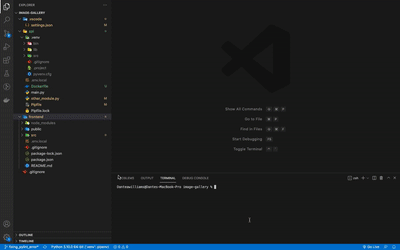

Image-Gallery
Site Objective:
Image-Gallery is a site that allows users to search any image of their choosing and creates their own galleria of their favorite images. The site also allows users to delete images that they no longer want and add newer images.
Summary:
Image-Gallery is a full stack website that uses JavaScript, React, Python, Flask, API, & Git. Image-Gallery uses a REST API to perform simple task like creating a Python virtual enviroment using pipenv. Makes external API calls from Flask & accepts requests from clients.
GitHub Repository